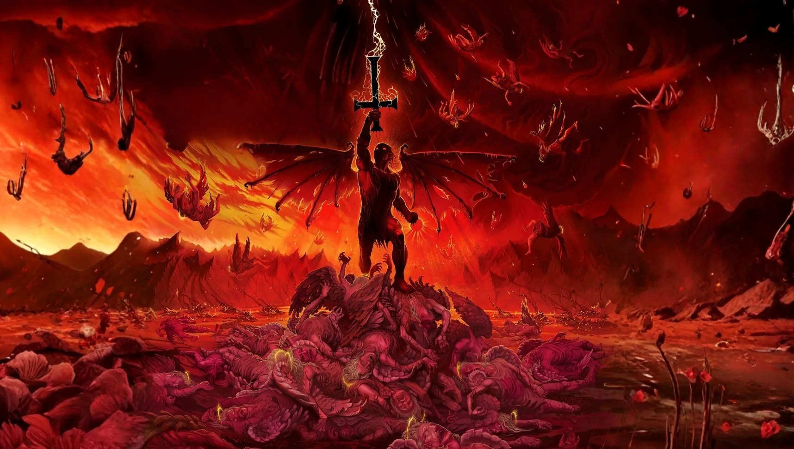

“Que comece a ascensão dos amaldiçoados!!!”
Headhunter D.C. retorna com a fúria profana de “Rise of the Damned...”, seu sexto álbum de estúdio!

Em um brado de resistência e paixão inabalável, o Headhunter D.C., pilar do Death Metal brasileiro, lança seu tão aguardado novo álbum, “Rise of the Damned...”, o sexto de inéditas em sua longa carreira. Lançado na apropriadíssima data de 06/06/2026, este trabalho marca o retorno da banda aos full lengths de estúdio após um hiato de 14 anos desde o aclamado “...In Unholy Mourning...” (2012). O selo responsável é a Mutilation Records, dando continuidade a uma longa parceria que já dura mais de 25 anos.
“Muito tempo se passou e muita coisa, boa e ruim, aconteceu entre 2012 e 2026, mas obviamente foram as intempéries que nos levaram a mais um recorde de demora no lançamento de um novo álbum de inéditas. A ‘maldição dos 5 anos’ de outrora deu lugar a 14 longos anos!”, declara o líder e vocalista Sérgio “Nekrobaloff666” Borges, prometendo que este será o último atraso de tal magnitude em sua carreira. “Rise of the Damned...” é uma declaração de que a longa e árdua jornada da banda, sempre marcada por grandes desafios, apenas fortaleceu a sua essência.
A formação atual do Headhunter D.C. conta com a força vital de Sérgio “Nekrobaloff666” Borges nos vocais, Danilo “D. Morbidus” Coimbra nas guitarras, Héracles “Demigod” Cardoso no baixo e os mais recentemente convocados Juan “Death Ax” Machado na bateria e Michael “Hellriff” Gonçalves na segunda guitarra. Este lineup representa o mais alto grau de resistência em um período de muita turbulência, entregando um material poderoso e massivo que sintetiza fielmente a ideologia de rebelião e o som visceralmente deathmetálico que definem o Headhunter Death Cult.
O período pós-2012 não foi apenas de espera, mas de intensa atividade e provações. A banda celebrou shows históricos, incluindo uma tour europeia por 9 países em 2013, o maior número de apresentações per anno desde sua fundação em 1987. Lançamentos consistentes, como participações em 5 compilações (incluindo 3 tributos), 2 álbuns ao vivo e uma compilação própria de covers, mantiveram a chama acesa durante o período citado.
Entretanto, a partir de 2016, a banda enfrentou golpes pessoais e estruturais. A perda da irmã de Sérgio em maio de 2016, a quem este álbum é dedicado, e a saída do fundador Paulo Lisboa em 2017, após quase 30 anos de parceria, foram momentos difíceis. “Foram dois grandes e dolorosos golpes em diferentes esferas”, afirma Borges, que conta com a participação especial de Paulo Lisboa neste novo disco, entre outros convidados não menos importantes. A sucessão de mudanças na formação, culminando na saída de dois membros em meados de 2025, mais uma vez abalou as estruturas e atrasou o processo, mas solidificou a resistência do atual quinteto, que finalmente alcançou a tão longamente aguardada reformulação do Culto para, assim, caírem novamente na estrada para promover o disco.
“Rise of the Damned...” transcende a música; é uma espécie de “grito dos excluídos”, a ascensão sobre tudo o que tentou sufocar a banda nos últimos tempos. É a “vingança negra” contra a falsidade e hipocrisia do mundo, uma explosão de paixão e resiliência que marcam não só o final de um ciclo de turbulências, mas o início de uma nova era para o Headhunter D.C. “É puro, brutal, inquietante e assombroso Metal da Morte da verdadeira velha escola do gênero saindo das profundezas de nossas mentes, corações e almas obscuras”, descreve Borges, enfatizando o compromisso da banda em sempre superar-se e defender seu legado.
Este álbum é uma promessa cumprida aos fãs deathcultistas que (im)pacientemente aguardaram por mais uma oferenda do Culto da Morte. Um testemunho de quase 40 anos de dedicação inabalável ao Death Metal Underground.
Sobre o Headhunter D.C.
Fundado em 1987, o Headhunter D.C. é um dos pilares do Metal Extremo brasileiro e sul-americano, pioneiros do Death Metal no país e a mais antiga banda do gênero em constante atividade no Brasil, reverenciado por sua sonoridade agressiva, atmosferas profanas e letras impactantes, além de suas apresentações ao vivo sempre brutais e memoráveis. Com uma discografia que influenciou gerações, a banda mantém uma base de fãs global, consolidando seu legado no cenário do Death Metal.
Formação atual
- Sérgio “Nekrobaloff666” Borges: vocal
- Danilo “D. Morbidus” Coimbra: guitarras e sessões de baixo no álbum
- Michael “Hellriff” Gonçalves: guitarra
- Héracles “Demigod” Cardoso: baixo
- Juan “Death Ax” Machado: bateria
- Daniel Brandão: sessões de bateria no álbum